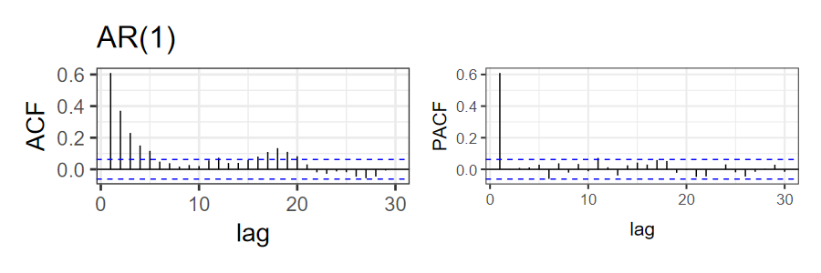
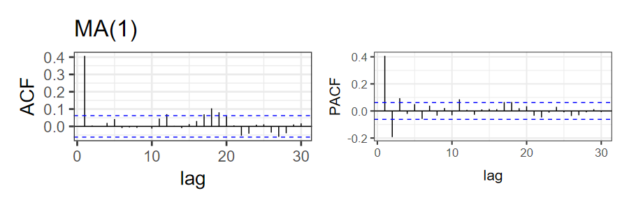
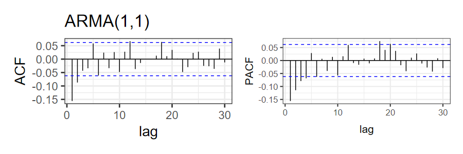

\(\mathrm{AR}(p)\)
\[ (y_i - \mu) = \sum_{j = 1}^p \phi_j (y_{i - j} - \mu) + \varepsilon_i \]
\(\mathrm{MA}(q)\)
\[ y_i - \mu = \sum_{k = 1}^q \theta_k \varepsilon_{i - k} + \varepsilon_i \]
\(\mathrm{ARMA}(p, q)\)
\[ (y_i - \mu) = \sum_{j = 1}^p \phi_j (y_{i - j} - \mu) + \sum_{k = 1}^q \theta_k \varepsilon_{i - k} + \varepsilon_i \]
feasts
unitroot_kpss(df$y)
unitroot_pp(df$y)



R: fable and feasts packages:
Automatically select model:
Compare models:
model(df_arma, arma_11 = ARIMA(y ~ pdq(1, 0, 1)),
arma_21 = ARIMA(y ~ pdq(2, 0, 1)),
arma_12 = ARIMA(y ~ pdq(1, 0, 2)),
arma_22 = ARIMA(y ~ pdq(2, 0, 2))) |>
glance() |> arrange(AIC)## # A tibble: 4 × 8
## .model sigma2 log_lik AIC AICc BIC ar_roots ma_roots
## <chr> <dbl> <dbl> <dbl> <dbl> <dbl> <list> <list>
## 1 arma_11 0.00249 1578. -3149. -3149. -3129. <cpl [1]> <cpl [1]>
## 2 arma_21 0.00249 1579. -3148. -3148. -3124. <cpl [2]> <cpl [1]>
## 3 arma_12 0.00250 1578. -3148. -3148. -3128. <cpl [1]> <cpl [2]>
## 4 arma_22 0.00250 1578. -3146. -3146. -3121. <cpl [2]> <cpl [2]>feasts vs. modeltime
tidyverts by Rob Hyndeman, consists of
tsibble, fable, and feasts. These
packages provide one way to integrate time-series models into the
tidyverse.
tidymodels framework.fable and
feasts, you need to convert your data frames into
tsibbles, which extend the tibble data frame
into a time-seriesmodeltime integrates time-series models with
tidymodels, but it isn’t as flexible about time-series:
date or datetime formats.
tidyverts
framework.timetk package has a lot of useful functions for
working with modeltime time-series.